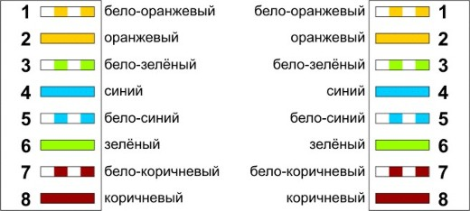
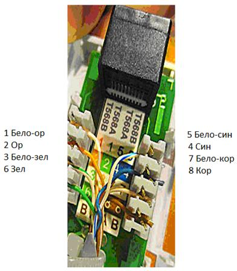
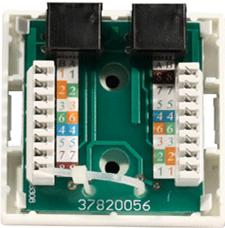

- Протестировать работоспособность сетевого адаптера
Для тестирования работоспособности попробуем отправить пинг на любой работающий сайт
- Запускаем командную строку
- Вводим команду Ping
- Далее вводим URL сайта которому отправляем команду
- Если пакеты были отправлены и получен ответ, сетевой адаптер работает без перебоев
- Произвести обжимку кабеля витой пары в вилке RJ45
При монтаже локальных сетей сегодня наиболее распространена неэкранированная витая пара 5й категории

Прямой обжим для соединения ПК-ХАБ (Одинаковый цвет проводников с обеих сторон кабеля)
Последовательность действий при обжиме:
- Аккуратно обрежьте конец кабеля резаком, встроенным в обжимной инструмент.
- Снимите с кабеля изоляцию ножом, встроенным в обжимной инструмент.
Разведите и расплетите проводки, выровняйте их в один ряд.
- Обкусите проводки так, чтобы их осталось чуть больше сантиметра (см. примечание).
- Вставьте проводники в коннектор RJ-45.
- Убедитесь, все ли провода полностью вошли в разъем и уперлись в его переднюю стенку.
- Вставьте коннектор в устройство для обжима коннектора.
- Надавите на клещи так, чтобы контакты коннектора зажали проводники внутри него.
- Произвести обжимку розетки под разъем RJ45;
Ситуация 1. Розетка с одним гнездом на 8 проводов

Нумерация контактов в розетке с одним гнездом по стандарту T568B
- Подготавливается для разделки кабель, снимается на длину не более 3 см его внешняя оболочка.
- Расплетаются пары на длину не более 13-15 мм.
- Далее, по схеме цветов, проводники по очереди заводятся в гребенку, заправляются боковой плоскостью лезвия отвертки и затем торцом лезвия заталкиваются до упора.
- В особых случаях (при необходимости) в одно гнездо можно вставить два кабеля витой пары, смонтированных на одну вилку
Ситуация 2. Розетка на 2 гнезда по 8 проводов

Цветовая маркировка проводов розетки стандарта T568B
1 бело-оранжевый, 2 оранжевый, 3 бело-зеленый, 4 синий, 5 бело-синий, 6 зеленый, 7 бело-коричневый, 8 коричневый
- Для надежной фиксации проводников в контактах розетки существует специальный инструмент, позволяющий поместить провод на максимальную глубину, хотя, можно обойтись обыкновенным пинцетом и отверткой.
- Провода перед вбиванием в клеммы зачищать не надо - щели оснащены специальной режущей кромкой, которая сама прекрасно снимает с них изоляцию.
- Заведите кабель на модуль розетки.
- Подготавливается для разделки кабель, снимается на длину не более 3 см его внешняя оболочка. Расплетаются пары на длину не более 13-15 мм.
- Закрепите кабель стяжкой на печатной плате розетки. Обрежьте конец стяжки с помощью кусачек или ножниц.
- На самой розетке всегда есть схема, какой цвет кабеля, в какой контакт должен приходить.
- После выбора места установки розетки нужно ее закрепить на стене с помощью двух шурупов или приклеить двусторонним скотчем (обычно прилагаются в комплекте с розеткой).
- Для крепления шурупами нужно снять крышку и печатную плату, чтобы добраться до крепежных отверстий в основании розетки.
- Чтобы снять крышку, нужно двумя пальцами сдавить ее с боков в месте, близком к основанию и потянуть на себя. Защелки выйдут из зацепления, и крышка легко отойдет в сторону.
- Далее снимается печатная плата отведением в стороны четырех защелок по углам.
Проверку работоспособности сетевого адаптера вы можете посмотреть в видеоролике, прилагаемом к заданию.
Выполнение практической части